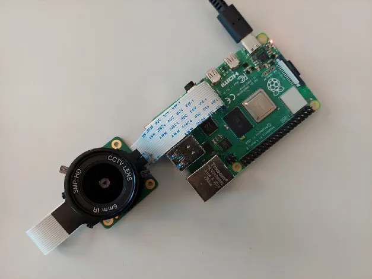
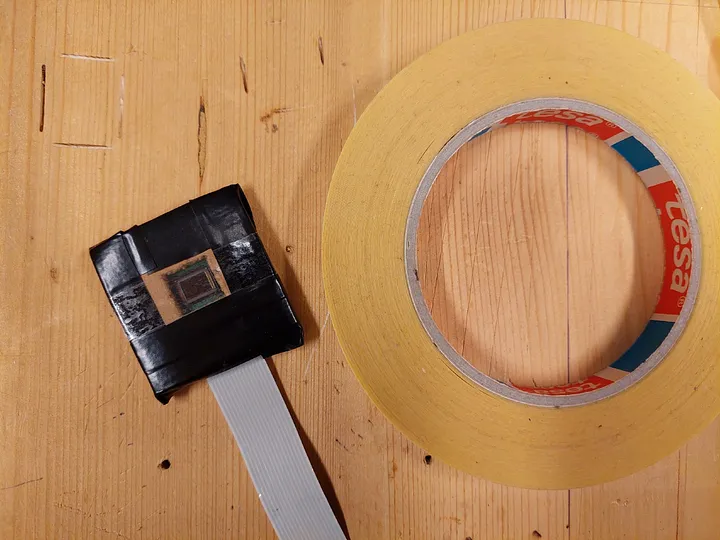
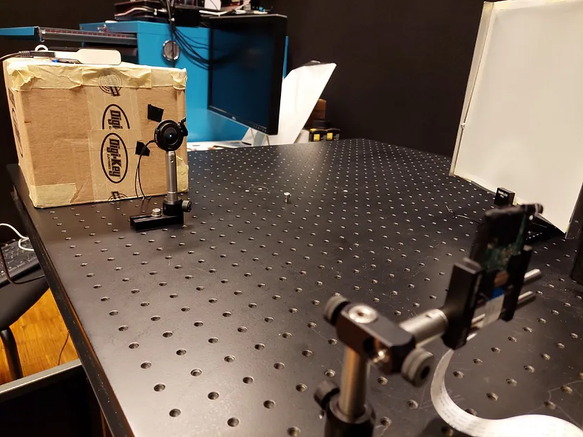
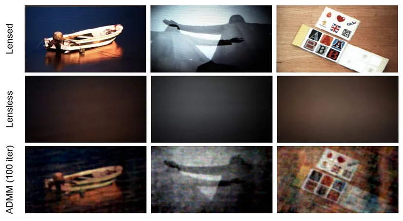

Lensless imaging, also known as computational imaging, is a type of imaging technology that does not use traditional lenses to capture images. Instead, it relies on complex algorithms and mathematical models to reconstruct images from the patterns of light that are captured by an image sensor. This approach allows for the creation of extremely thin and flexible cameras, which can be used in a wide range of applications, including medical imaging, industrial inspection, and consumer electronics.
One of the key advantages of lensless imaging is its ability to capture high-resolution images of objects that are too small or too far away to be seen with traditional lenses. This makes it an important tool for scientific research, where it can be used to image microorganisms, nanoparticles, and other tiny objects. It is also useful for industrial inspection applications, where it can be used to detect defects in materials and structures.
Conventional (top) vs. lensless (bottom) imaging. Image by E.Bezzam (LCAV), inspired by Fig 4. of this paper.
Lensless imaging at LCAV
Setting up the Raspberry Pi and HQ sensor:
To setup the RPi, we need to install the Raspberry Pi OS and connect the RPi to a WiFi network, which can be done without any external display, according to this tutorial.
It is then necessary to setup SSH'ing without a password, as in this tutorial, in order for the remote capture and display scripts provided in the LenslessPiCam GitHub repository.
Building LenslessPiCam:
With the RPi and sensor setup, we can proceed to building LenslessPiCam! This tutorial explains how to do just that with the HQ sensor, cardboard, electric tape and doubled sided tape. We really recommend using this type of tape (doubled-sided tape as the lens replacement and electric tape for cropping / holding things together) as we found it gave the best results.
While assembling LenslessPiCam, it will be useful to have a point source to help with creating the aperture (i.e. cropping). In this tutorial, we describe how to build one from an Arduino, a white LED, common electric components, and a cardboard box. A point source will also be needed to perform imaging.
Performing imaging:
This is the part when we take pictures.
This tutorial describes how to take measurements with LenslessPiCam, using scripts from the GitHub repository.
In this tutorial, we describe in more detail how to digitally reconstruct an image from the raw measurements. We also suggest some extension / exercises that can be done.
If you are an instructor and would like the solutions, you can request access here or send an email to eric[dot]bezzam[at]epfl[dot]ch.
Evaluating the reconstructions:
In the repository, we provide a script to remotely display pictures on an external monitor.
This can be useful for creating a small dataset to evaluate different reconstruction techniques.
In this tutorial, we present different metrics that can be used for evaluating reconstructions, and present a dataset that can be used for evaluating different reconstruction strategies.
 
 
(1) HQ camera connected to a Raspberry Pi. (2) Tape-constructed lensless camera. (3) PSF measurement setup. (4) Example reconstructions. Images by E.Bezzam (LCAV).